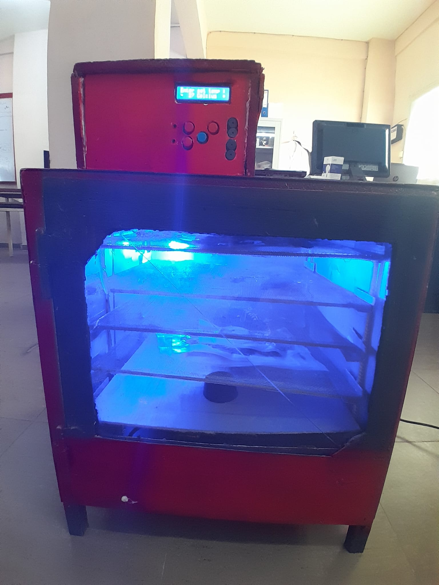

Dimensionnement et conception d'un déshydrateur alimentaire à commutation automatique solaire / secteur, primé au concours GETEC.
Afin de pallier l'intermittence de l'énergie solaire, ce projet propose un système autonome assurant la déshydratation continue des denrées alimentaires grâce à une bascule intelligente entre alimentation photovoltaïque et réseau électrique.
Vidéo : Confrontation de la maquette électronique réelle (module d'alimentation, Arduino, carte relais) avec la modélisation CAO 3D sous KiCad.

Figure 1 : Caisson thermique complet avec claies de séchage et panneau de commande supérieur.